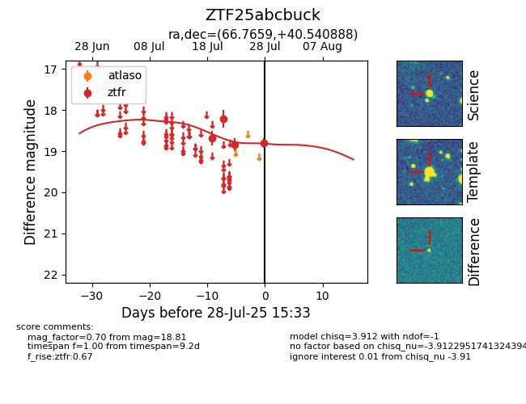

Target ZTF25abcbuck at 2025-07-28 15:33, see:
FINK: fink-portal.org/ZTF25abcbuck
Lasair: lasair-ztf.lsst.ac.uk/objects/ZTF25abcbuck
ALeRCE: alerce.online/object/ZTF25abcbuck
alt names
ZTF25abcbuck (ztf,fink)
coordinates:
equatorial (ra, dec) = (66.7659,+40.54089)
galactic (l, b) = (161.0511,-5.85724)
photometry
last ztfr=18.81
4 ztfr detections
